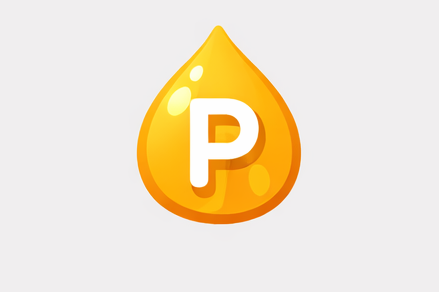
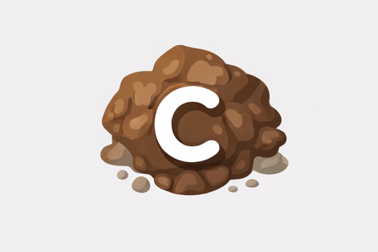
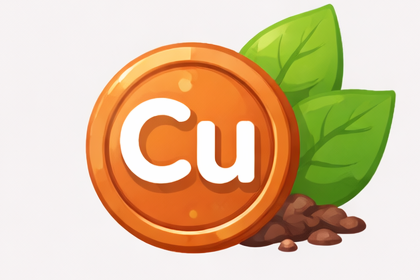
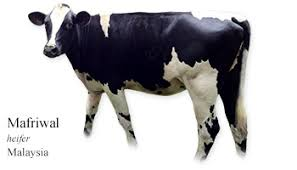
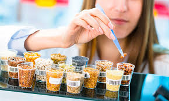
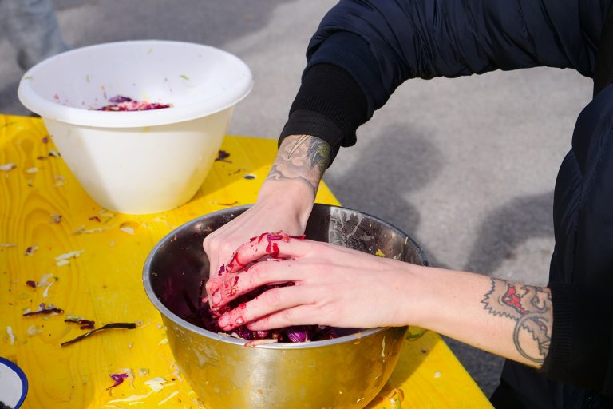
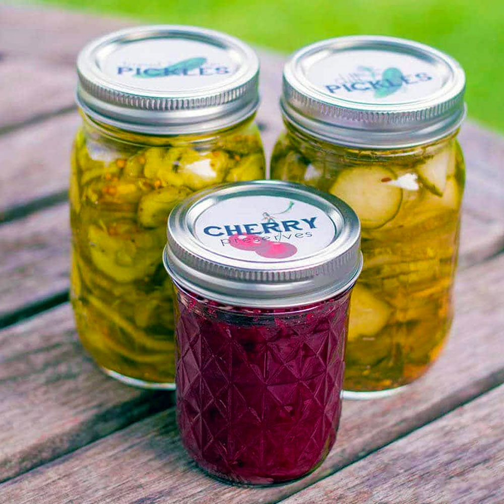
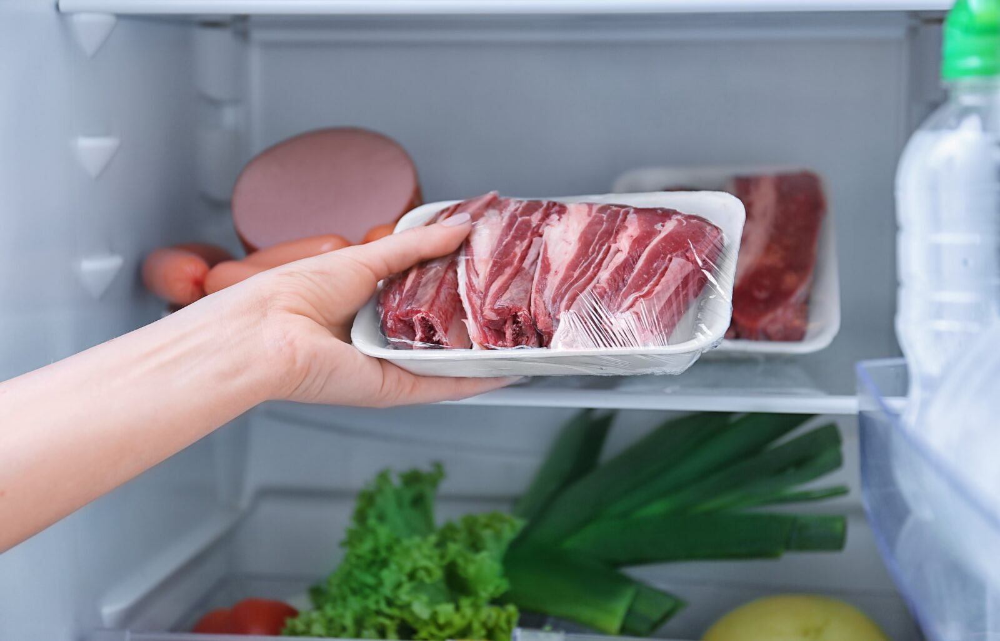
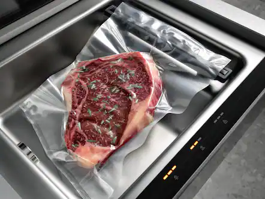

Nutrition is the study of nutrients found in food and their role in maintaining health, growth, and body functions. Nutrients such as carbohydrates, proteins, fats, vitamins, minerals, and water are essential for providing energy, building body tissues, and regulating bodily processes. A balanced diet is important to ensure the body receives all the nutrients it needs to stay healthy.
Food technology involves the application of scientific knowledge and technology in the production, processing, preservation, and packaging of food. It helps improve food safety, maintain nutritional quality, and extend shelf life. Through food technology, food can be made safer, more convenient, and suitable for consumption by a growing population.
Nutrient Requirements of Plants
Apart from humans and animals, plants also require certain nutrients for growth, development, and reproduction. The nutrients required by plants can be classified into two groups, namely macronutrients and micronutrients.
Macronutrients
Nitrogen (N)
Promotes leaf growth and is needed to make proteins and chlorophyll.

Phosphorus (P)
Supports root development, flowering, and energy transfer.
Potassium (K)
Strengthens plants and improves resistance to diseases.
Calcium (Ca)
Builds strong cell walls and supports new tissue growth.
Magnesium (Mg)
Main component of chlorophyll for photosynthesis.
Sulfur (S)
Needed for protein formation and enzyme activity.

Carbon (C)
Main element in food produced during photosynthesis.
Oxygen (O)
Required for respiration and energy release.
Hydrogen (H)
Involved in photosynthesis and plant growth.
Micronutrients
Boron (B)
Helps cell wall formation and sugar transport.
Iron (Fe)
Needed for chlorophyll formation and energy transfer.

Copper (Cu)
Important for enzyme activity and photosynthesis.
Molybdenum (Mo)
Essential for nitrogen fixation in plants.
Manganese (Mn)
Supports enzyme function and photosynthesis.
Zinc (Zn)
Needed for growth hormones and enzyme activity.
Nitrogen Cycle
The nitrogen cycle is an essential natural process in which nitrogen moves between the atmosphere, soil, plants, and animals. Here are the main stages:
Nitrogen Fixation: Nitrogen gas (N₂) from the atmosphere is converted into ammonia (NH₃) by nitrogen-fixing bacteria in the soil or in root nodules of legumes.
Nitrification: Ammonia is oxidized into nitrites (NO₂⁻) and then into nitrates (NO₃⁻) by nitrifying bacteria, which plants can easily absorb.
Assimilation: Plants absorb nitrates and use them to synthesize proteins, nucleic acids, and other nitrogen-containing compounds essential for growth.
Ammonification: Decomposers break down dead organisms and waste products, converting organic nitrogen back into ammonia or ammonium compounds.
Denitrification: Denitrifying bacteria convert nitrates back into nitrogen gas (N₂), releasing it into the atmosphere and completing the cycle.
For a better visual understanding, you can watch this explanatory video on the nitrogen cycle:
Food production technology is applied to solve the problem of global food shortages. Among the steps taken in food production technology include:
Improving food quality
Increasing the quantity of food production
Producing and using quality breeds
Using various types of modern technology
Ways to Improve the Quality and Quantity of National Food Production

Use of Quality Breeds
Using quality breeds such as Mafriwal cattle helps increase meat and milk production,
resulting in higher food quality and supply.
Use of Modern Technology
The use of modern technology such as tractors, automated irrigation systems,
and harvesting machines increases efficiency and productivity.
Education and Guidance for Farmers
Farmers receive training, workshops, and guidance on modern farming techniques,
proper fertilizer use, and pest control methods.

Research and Development
Research and development lead to innovative products such as high-yield seeds,
disease-resistant crops, and improved farming methods.
Food Processing Technology
According to nutritionists, fresh raw food is better to eat because it is healthier for the body. However, not all raw food ingredients can be eaten fresh. Therefore, most raw food ingredients are transformed into other forms through food processing technology. Processed food lasts longer, tastes better, is more attractive and is easier to digest. The following are food processing technologies:
Cooking
Method: Food is heated to destroy harmful microorganisms.
Example: Cooked rice, boiled vegetables

Fermentation
Method: Microorganisms convert substances into simpler compounds.
Example: Yogurt, bread, tapai
Dehydration / Drying
Method: Water is removed to slow down spoilage.
Example: Dried fruits, dried fish
Pasteurization
Method: Food is heated at a specific temperature for a short time to reduce bacteria.
Example: Milk, fruit juice

Canning
Method: Food is sealed in airtight containers to prevent contamination.
Example: Canned sardines, canned fruits

Freezing
Method: Food is stored at very low temperatures to slow microorganism activity.
Example: Frozen meat, frozen vegetables
Irradiation
Method: Food is exposed to radiation to kill bacteria and pests.
Example: Spices, potatoes

Vacuum Packaging
Method: Air is removed from the packaging to reduce oxidation and spoilage.
Example: Vacuum-packed meat, coffee
Health Foods and Nutritional Supplements
Health foods and nutritional supplements are products designed to support overall health and improve body functions. Health foods focus on providing additional nutritional value that helps maintain physical well-being and prevent health problems.
Nutritional supplements supply essential nutrients in concentrated forms to support daily nutritional needs. They are commonly used to complement a balanced diet and should be taken responsibly according to recommended guidelines to ensure safety and effectiveness.